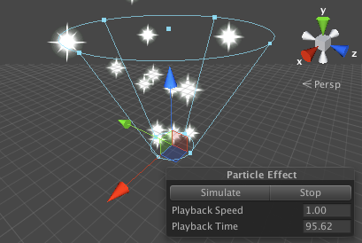

Textures
Normally, the mesh geometry of an object only gives a rough approximation of the shape while most of the fine detail is supplied by Textures. A texture is just a standard bitmap image that is applied over the mesh surface. You can think of a texture image as though it were printed on a rubber sheet that is stretched and pinned onto the mesh at appropriate positions. The positioning of the texture is done with the 3D modelling software that is used to create the mesh.

Unity can import textures from most common image file formats.
Textures for use on 3D models
Textures are applied to objects using Materials. Materials use specialised graphics programs called Shaders to render a texture on the mesh surface. Shaders can implement lighting and colouring effects to simulate shiny or bumpy surfaces among many other things. They can also make use of two or more textures at a time, combining them for even greater flexibility.
You should make your textures in dimensions that are to the power of two (e.g. 32x32, 64x64, 128x128, 256x256, etc.) Simply placing them in your project's Assets folder is sufficient, and they will appear in the Project View.
Once your texture has been imported, you should assign it to a Material. The material can then be applied to a mesh, Particle System, or GUI Texture. Using the Import Settings, it can also be converted to a Cubemap or Normalmap for different types of applications in the game. For more information about importing textures, please read the Texture Component page.
2D graphics
In 2D games, the Sprites are implemented using textures applied to flat meshes that approximate the objects' shapes.

An object in a 2D game may require a set of related graphic images to represent animation frames or different states of a character. Special techniques are available to allow these sets of images to be designed and rendered efficiently. See the manual page about the Sprite Editor for more information.
GUI
A game's graphic user interface (GUI) consists of graphics that are not used directly in the game scene but are there to allow the player to make choices and see information. For example, the score display and the options menu are typical examples of game GUI. These graphics are clearly very different from the kind used to detail a mesh surface but they are handled using standard Unity textures nevertheless. See the manual chapter on GUI Scripting Guide for further details about Unity's GUI system.
Particles
Meshes are ideal for representing solid objects but less suited for things like flames, smoke and sparkles left by a magic spell. This type of effect is handled much better by Particle Systems. A particle is a small 2D graphic representing a small portion of something that is basically fluid or gaseous, such as a smoke cloud. When many of these particles are created at once and set in motion, optionally with random variations, they can create a very convincing effect. For example, you might display an explosion by sending particles with a fire texture out at great speed from a central point. A waterfall could be simulated by accelerating water particles downward from a line high in the scene.

Unity's particle systems have a wealth of options for creating all kinds of fluid effects. See the manual chapter on the subject for further information.
Terrain Heightmaps
Textures can even be used in cases where the image will never be viewed at all, at least not directly. In a greyscale image, each pixel value is simply a number corresponding to the shade of grey at that point in the image (this could be a value in the range 0..1 where zero is black and one is white, say). Although an image like this can be viewed, there is no reason why the numeric pixel values can't be used for other purposes as well, and this is precisely what is done with Terrain Heightmaps.
A terrain is a mesh representing an area of ground where each point on the ground has a particular height from a baseline. The heightmap for a terrain stores the numeric height samples at regular intervals as greyscale values in an image where each pixel corresponds to a grid coordinate on the ground. The values are not shown in the scene as an image but are converted to coordinates that are used to generate the terrain mesh.
Interestingly, even though a heightmap is not viewed directly as an image, there are still common image processing techniques that are useful when applied to the height data. For example, adding noise to a heightmap will create the impression of rocky terrain while blurring will smooth it out to produce a softer, rolling landscape.
More information about terrains in Unity can be found in this section of the manual.